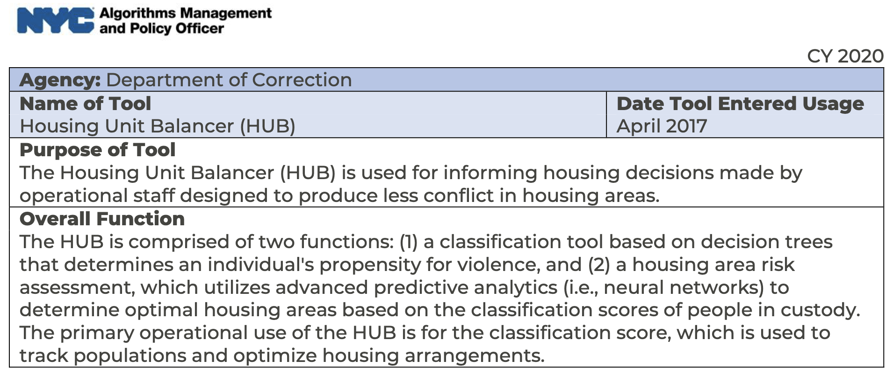

Reading assignments
Weapons of Math Destruction, Introduction and Chapter 1
This book by Cathy O’Neil is always a nice introduction to learning about algorithmic harms. I sometimes gift the book to friends and colleagues who just start their career in the field. The first two chapters of the book is especially enough to understand the general idea.
I was most interested in the D.C.’s Teacher Evaluation System, IMPACT and its problems. The system uses student performance score to assess teacher performance. This extremely simple assumption itself seems to be highly problematic, in my opinion. My assumption is that the city considered that this would be one of the easiest solutions to act on (i.e., hiring and firing of teachers). After the system is implemented, highly praised teachers sometimes get fired and for them it was really difficult to understand why the decision was made. It also turned out that teachers sometimes cheat and correct students’ scores.
At the end of the first chapter, the author summarized a pattern of algorithimc harms in three ways. First, the models are usually opaque, which reduce accountability and make them inscrutable. Second, often these models can harm the people who are targeted because training data’s bias is simply reproduced. Third, these models are easily scalable and thus generate harms in a much larger scale.
Case Study: Algorithmic Decision-Making and Accountability
This cast study is about an algorithmic transparency bill introduced by a New York City Council, James Vacca back in 2017. The original version of the bill would require city agencies “that use algorithms or other automated processing methods that target services, impose penalties, or police persons to publish the source code used for such processing.” Given that this is still something very difficult to practice in 2023, I find this proposal quite radical and refreshing. His motivation made sense though: complete transparency on any public automated decision-making.
Unfortunately the bill has met many criticisms such as privacy concerns, exposure of proprietary information, and effectiveness in public understanding of the source code. The bill was modified several times and the final watered-down version was to create a task force that is comprised of experts in diverse fields that would examine algorithmic decision-making (ADS) tools that the city uses, and make recommendations. The catch though was that various city departments who use these tools are not required to participate in the collaboration with the task force, meaning the participation was voluntary. Also the fact that the task force would simply make recommendations means there is zero enforceability.
I did some digging because I got curious about what happened to the task force. Their website (New York City Automated Decision Systems Task Force) shows the members of the task force, which actually have active members/researchers in the field of AI ethics. They published a report back in 2019 and at a glance, they do make concrete recommendations on each type of algorithmic decision-making systems in NYC. In Nov 2019, the city seemed to decide to establish an Algorithms Management and Policy Officer (AMPO). But some news articles say this position doesn’t exist any more. Regardless, AMPO did release a report in 2020, which has “algorithmic tool directory” that shows how the city’s ADS tools work, which I find pretty useful. Here’s an example:

Algorithmic Accountability: A Primer
This primer was written by Data & Society, an independent nonprofit research organization about tech ethics and governance. This was an excellent overview of ADS and algorithmic accountability.
It gives a summary of ProPublica’s COMPAS investigation. It says the two issues of this incident are 1) lack of standard definition of algorithmic bias (related to the debate between Northpointe and Propublica’s conflicting opinions about what is fair) and 2) lack of mechanism for algorithmic accountability (wasn’t mentioned here but probably related to Loomis v. Wisconsin).
Then it lists several key issues related to ADS. Regarding fairness and bias, it pointed out that algorithms can be quickly outdated unless they are consistently monitored and adjusted. About opacity and transparency, it mentioned that transparency can be exploited by bad actors gaming the system. Importantly, it mentioned the repurposing of algorithms and data meaning algorithms built for a problem can be repurposed and applied to a completely different problem (PredPol using an algorithm built for earthquake modeling). Finally it mentioned the lack of standards for auditing.
Regarding algorithmic accountability, which the primer defines as “the assignment of responsibility for how an algorithm is created ans its impact on society”, the lack of this makes me think the moral disengagement paper we read last week. In terms of the enforcement and regulation, it did mention a possibility of self-regulation by corporations but as I expected (and agreed), it said this approach is often ad hoc and out of control of citizens and governments, which is unreliable.
The lecture and talk with Rumman Chowdhury
This week’s lecture was led by Professor Mehran Sahami, who talked about algorithmic decision-making, different definitions of fairness, and their relationship to the COMPAS incident. Among many definitions of fairness, we covered anti-classification, classification parity, calibration, and lack of disparate impact. The first three are mathematically well-defined and the last one focuses on empirical evidence. Regarding the COMPAS case, he mentioned that Northpointe’s argument was that their model is fair because from the perspective of the calibration definition of fairness, their model had similar predictive probability between white and black based on their risk factors. But as our guest speaker for the week, Rumman Chowdhury pointed out, Nortpointe’s survey questions included irrelevant and bias-reproducing questions such as whether a person grew up in a poor neighborhood or knew people who went to jail, etc.
During Rumman Chowdhury’s session, she mentioned several interesting points. First, she summarized the problem of ADS as “models are good at generalization but bad at specificity.” Second, regarding her experience in Twitter, she mentioned that working on a product team by implementing research ideas was very helpful to produce power and momentum. Regarding generative AI, she mentioned that the error space by AI is now much wider than before, which creates bigger concerns, and where often the key question is “who gets to be the arbitor of the truth?” Regarding algorithmic auditing, on one hand she promoted red-teaming (especially as a community-driven approach), but also at the same time she said it’s important to have community consensus on auditing.
Overall thoughts
The reading assignments were excellent and interesting. However, the course felt quite rushed. We had to cover 4 definitions of fairness and COMPAS case study within 15 minutes. I was already quite familiar with everything but I wonder how many attendees were able to process all of it in that short amount of time.
During the breakout session, instead of talking about fairness, ADS, and algorithmic accountability, we were asked to think about when we were denied to talk about tech ethics at work or work-adjacent settings, and why we thought that was the case. Then we did an exercise where we listed various values we care about and see whether any values are diametrical.
To begin with, the breakout session (group discussion) was short, but I was quite unhappy that the discussion was not much related to the topics or the readings. Yes, when building an ADS system, one needs to think about how to handle the trade-offs between different values but especially since this course was advertised as “for practitioners,” I was looking for something more concrete. The post-it exercise was in a way useful but I also thought it prevented us from having an actual conversational discussion.
Overall, this week has been a review of the stuff that I was mostly familiar with (thank you FAccT conferences!). I hope there are more active and practical engagements in the coming weeks.